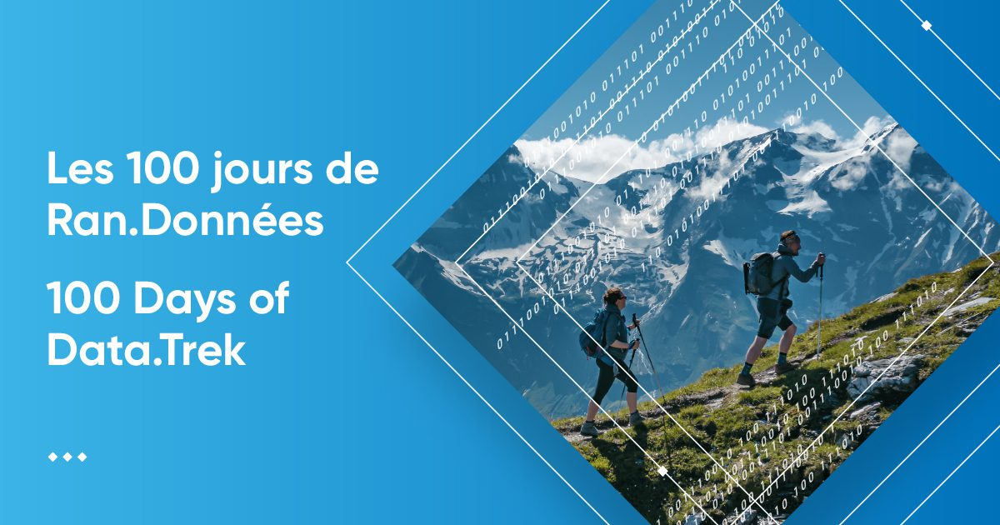

Workshops and teaching
Presentations of my workshops
Sentinel North: introduction to ggplot2
Introduction to ggplot2 visualization given at the Sentinel North community.

Québec-Océan Training Workshop
The yearly Québec-Océan Training Workshop on data management and archiving aims at providing advices on good data managment practices. The workshop is given every year by 5-6 trainers.
Québec-Océan Training Workshop: Data Management and Archiving
IVADO Datatrek: introduction to ggplot2
Introduction to ggplot2 R package given at the IVADO 100 days of Data.trek.

R à Québec
Présentation sur la programmation fonctionnelle avec R lors du symposium R à Québec 2019.